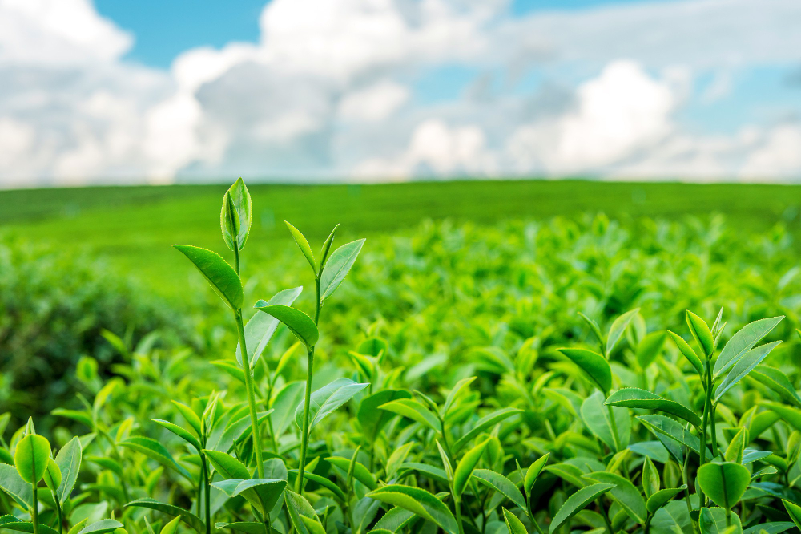
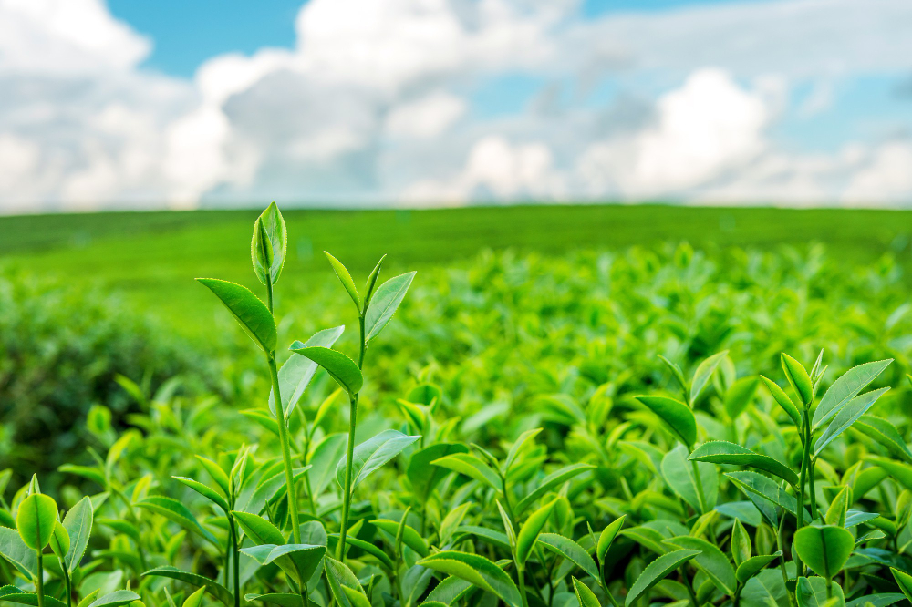
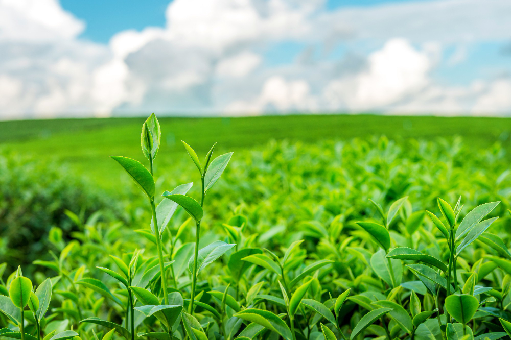

Agriculture encompasses the science, art, and practice of cultivating the soil, producing crops, and raising livestock, with the preparation and marketing of the resulting products. It's a vital industry that supports livelihoods, provides food and raw materials, and contributes to strong economies.
Here's a more detailed look at agriculture:
Key Aspects of Agriculture:
Importance:
Food Security:
Agriculture is crucial for providing food and ensuring global food security.
Livelihoods:
It supports livelihoods, particularly in rural areas, by providing jobs and income.
Economic Growth:
Agriculture contributes to economic growth through trade and the production of raw materials.
Global Impact:
Food Production: Agriculture is responsible for producing a wide variety of crops and livestock products.
Poverty Reduction: Agriculture can help reduce poverty and improve food security in developing countries.
Sustainability: Sustainable agricultural practices are essential for long-term food security and environmental protection.
Organizations Involved:
Ministry of Agriculture & Farmers Welfare (India): This ministry is responsible for promoting and supporting agriculture in India.
World Bank: The World Bank provides financial and technical assistance to developing countries for agriculture and food security projects.
Food and Agriculture Organization (FAO): FAO is a UN agency that works to eradicate hunger and promote sustainable agriculture.

Agriculture is the backbone of many economies around the world. It provides food, raw materials, and employment to millions. Below, we compare traditional and modern agriculture methods.
1. Traditional agriculture
Traditional agriculture is a farming system that uses local resources and manual labor to grow crops. It's based on centuries-old practices and knowledge, and often focuses on growing food for local consumption.
Characteristics:
Sustainable: Traditional agriculture focuses on harmony with the environment and climate.
Biodiversity: Traditional agriculture supports high biodiversity.
Local knowledge: Traditional agriculture relies on local and indigenous knowledge.
Limited mechanization: Traditional agriculture uses limited mechanization or modern technology.
Traditional agriculture practices
Traditional agriculture mixes crops that complement one another.
Traditional agriculture emphasizes natural processes.
Traditional agriculture rotates crops to balance nutrients in the soil.
Modern agriculture is an ever-changing approach to agricultural innovations and farming practices that helps farmers increase efficiency and reduce the amount of natural resources needed to meet the world's food, fuel and fiber demands.
How does modern agriculture work?
Technology:Uses sensors, devices, machines, and information technology to target specific areas and plants.
Precision agriculture:Uses technology to collect and analyze data on soil conditions and weather patterns
Genetic modification:Modifies crops to resist pests, tolerate harsh conditions, or increase nutrient content
 

 click here to know more
click here to know more